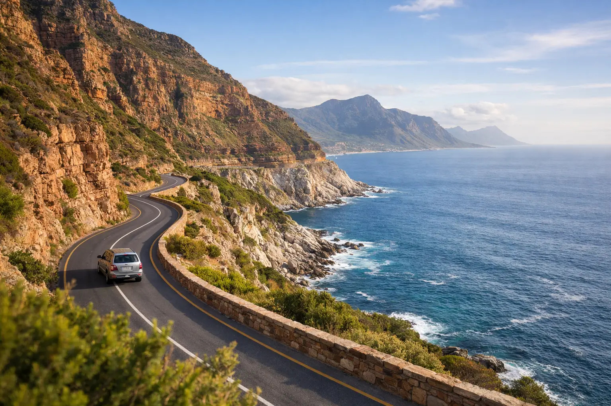

Chapman's Peak Drive Tour: What to Expect

The first glimpse around the bend is the moment a Chapman's Peak drive tour earns its reputation. On one side, sandstone cliffs rise straight from the road; on the other, the Atlantic opens toward Hout Bay, Noordhoek, and a horizon that seems to go on forever. This is not a route to rush. It is a coastal experience best enjoyed with enough time for safe pull-offs, photographs, and the wider Cape Peninsula highlights that make the journey feel complete.
For visitors with limited time in Cape Town, Chapman's Peak is usually part of a full-day Cape Peninsula route rather than a standalone outing. It connects naturally with Hout Bay, Cape Point, the Cape of Good Hope, Simon's Town, and Boulders Beach. With the right plan, you can enjoy the scenery without spending the day watching the clock or worrying about unfamiliar roads.
Where Chapman's Peak Drive Fits on the Peninsula
Chapman's Peak Drive runs between Hout Bay and Noordhoek on the Atlantic side of the Cape Peninsula. The road is short, but its 114 curves and dramatic cliffside setting make it one of South Africa's most photographed drives. Driving south from Hout Bay gives passengers sweeping ocean views, while the return direction offers a different perspective over the mountains and bay.
The drive itself can take as little as 20 to 30 minutes without stops. Allow closer to an hour if you want to use the designated viewpoints, take photos, and enjoy the landscape at an unhurried pace. For a full Cape Peninsula day, the road works especially well after a morning departure from central Cape Town and a stop in Hout Bay.
Timing matters. A well-paced itinerary normally leaves room for Cape Point and Boulders Beach later in the day, plus lunch in a coastal village or at a scenic stop. Trying to fit Table Mountain, the Winelands, Cape Point, penguins, and Chapman's Peak into one day is possible only on paper. In reality, it leads to long stretches in the vehicle and very little time at the places you came to see.
What You Will See on a Chapman's Peak Drive Tour
The main attraction is the road itself: a narrow ribbon cut into the mountain above the Atlantic. As you travel along it, Hout Bay gradually falls behind you and the long curve of Noordhoek Beach comes into view. On clear days, the light shifts constantly across the water, creating the kind of scenery that makes even experienced travelers reach for their cameras.
There are formal viewing areas where it is safe to stop. These are the right places to take photographs, stretch your legs, and let your guide point out the coastline below. Stopping on bends or outside marked bays is not a good idea. The road remains an active public route, and visibility can be limited around corners.
Wildlife sightings are possible, especially seabirds over the water and raptors along the cliffs, but Chapman's Peak should not be treated as a wildlife tour. For close-up animal experiences, Boulders Beach is the reliable stop for African penguins. The beauty here is the scale of the landscape: mountain, ocean, sky, and the engineering of the road all in one view.
The best light for photos
Morning often brings cleaner air and softer light over Hout Bay, while later afternoon can be particularly beautiful looking toward Noordhoek and the Atlantic. Conditions change with the season and weather, so there is no single perfect time for every visit. A flexible guide-led schedule is useful because it can adapt the order of stops when cloud, wind, or traffic affects the route.
If photography is a priority, bring a camera or phone with enough storage, sunglasses to reduce glare, and a light layer for the wind. Even warm Cape Town days can feel cool at exposed viewpoints.
A Sensible Full-Day Route
A classic Peninsula itinerary is designed around geography, not just a checklist of famous names. Hotel pickup in Cape Town is typically followed by a coastal drive toward Hout Bay, where there may be time to see the harbor or add an optional boat trip to Seal Island, weather permitting. From there, the route continues over Chapman's Peak Drive toward Noordhoek and the southern Peninsula.
Cape Point and the Cape of Good Hope are usually the major midday stops. They are close together but offer different experiences: Cape Point has the historic lighthouse area and high viewpoints, while the Cape of Good Hope is the famous signpost and a wild, windswept coastline. Entry fees and optional funicular access may be separate, depending on the tour format.
After Cape Point, the route often continues through Simon's Town to Boulders Beach. The penguin colony is a favorite for families, couples, and first-time visitors because it offers a close view of one of the Cape's most recognizable residents. The return to Cape Town can follow False Bay and the coastal suburbs, with a late-afternoon hotel drop-off after a full but manageable day.
Private tours offer the most flexibility. A couple may want longer at Chapman's Peak and fewer shopping stops, while a family may prefer extra time with the penguins. Larger groups need a clearer timetable, particularly when coordinating lunch reservations, entrance payments, restrooms, and coach parking. Flexi Tours can arrange private or shared sightseeing formats with hotel pickup, experienced local drivers, and an itinerary shaped around your group size and interests.
Road Conditions, Closures, and Safety
Chapman's Peak Drive is famous because it is exposed to the elements. Strong wind, heavy rain, maintenance work, or rockfall risk can lead to temporary closures. These closures are a safety measure, not an inconvenience to work around. Anyone planning a self-drive trip should check the road status on the morning of travel and have an alternate route in mind.
On a guided tour, your driver can adjust the day using other Peninsula roads if Chapman's Peak is unavailable. You may still see Hout Bay, Noordhoek, Cape Point, and the penguins, but the exact order and driving time may change. This is one reason it helps to avoid booking a Peninsula day with no margin for weather or delays.
For self-drivers, keep left, wear seat belts, and use only marked pull-off areas. Do not focus on photos while moving, and do not assume every scenic-looking space is safe to stop. The road can be busy during peak travel periods, and cyclists may also be present. Fuel up before heading down the Peninsula, carry water, and keep valuables out of sight when parked.
Guided Tour or Self-Drive?
Self-driving gives you complete control of the day and can work well for confident drivers who are comfortable navigating a foreign destination. It is also a good choice for travelers who want to spend several hours hiking, dining in Noordhoek, or visiting smaller beaches at their own pace. The trade-off is that one person must concentrate on a winding road rather than enjoy every view, and you need to manage parking, tolls, route changes, and attraction timings yourself.
A guided Chapman's Peak drive tour is often the easier choice for visitors who want to relax and see more in one day. Everyone can look out the window, ask questions, and take photos without navigating. It is particularly practical for families, solo travelers, first-time visitors to South Africa, and groups who would rather not divide themselves between rental cars.
The best choice depends on your travel style. If you value independence above all else, self-drive can be rewarding. If you value local insight, hotel-to-hotel convenience, and a day that has already been organized around realistic travel times, a private or shared tour removes much of the pressure.
What to Bring for the Day
Cape Peninsula weather can change quickly, sometimes within the same hour. Comfortable walking shoes are more useful than formal footwear, especially at Cape Point and Boulders Beach. Bring a light windproof jacket, sunscreen, water, sunglasses, and a power bank for photos. If you are prone to motion sickness, sitting closer to the front of the vehicle and carrying your preferred remedy can make the curving sections more comfortable.
Keep expectations flexible as well. A cloud-covered Cape Point or a closed Chapman's Peak road can sound disappointing, yet the Peninsula still has plenty to offer when a knowledgeable driver changes the plan. The Cape is at its best when you allow room for the weather, the views, and the occasional unplanned stop that becomes the favorite memory of the day.
When you plan your Chapman's Peak drive tour, give this extraordinary stretch of coast more than a quick pass-through. Let the road be one memorable part of a day that also leaves time to meet the penguins, stand at the edge of the Peninsula, and return to your hotel with the Atlantic still in view.
Planning this trip?
Tell us your dates and we will put a day together for you.